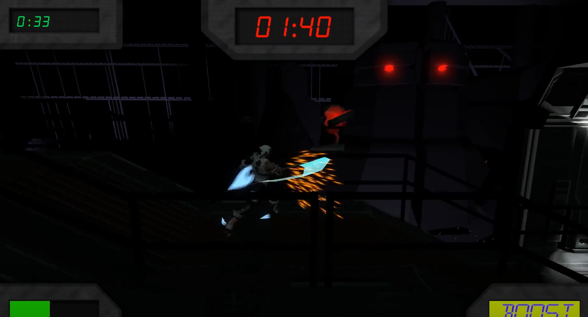

1 / 6

Otto Game Project
2 / 6

Otto Game Project
3 / 6

Audio Visualiser
4 / 6

Graphics Engine
5 / 6
Graphics Engine
6 / 6

Graphics Engine
I am a games programmer who has experience with c/c++, unity, and more which can be seen below. I have finished my Bacholer of games and virtual worlds(Programming) at AIE(Academy of Interactive Entertainment). Throughout my study I have gained experience in physics, graphics, AI, and audio programming. Most of these projects using C++ and some with C#(Unity). I have learned a lot about group projects and communication at AIE as we have done many game jams and major group projects. I love finding solutions to problems that I come across when programming and learning how to improve my work. I also find it refreshing to work with others to find solutions to problems or just discussing ideas with each other.


Melbourne - Australia
2017-2019
Melbourne - Australia
2015 - 2016
Melbourne - Australia
2015 - 2016
2016 - Currently
2017 - 2018
2017 - Currently
2018
2017
2018
2017
2018
2018
2018
2018
2017
2019
2019

Otto is a third person platform that I worked on in my second year of university with six other people, two programmers, two designers, and two artists. We had 4-5 months to come up with an idea, create the technical design documents, pitch it and make a smooth experience with a functional gameplay loop. Some features got cut to account for over scoping, Which made it easier to focus on the important mechanics. However this did not take away from project as it was only a demo which could be turned into a full game later on in the future if pursued. I have learned a lot from this project such as, a strong understanding of how to work effectively in a team, how to delegate tasks with others, and use a work flow such as scrum meetings which let us keep each other upto date and help one another.